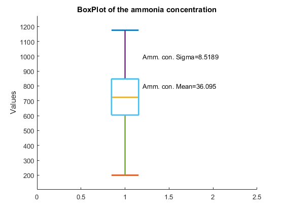
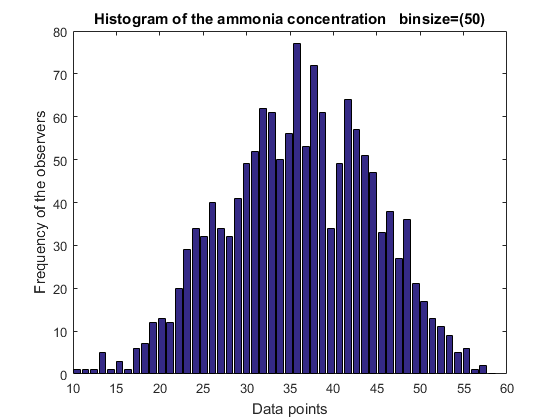
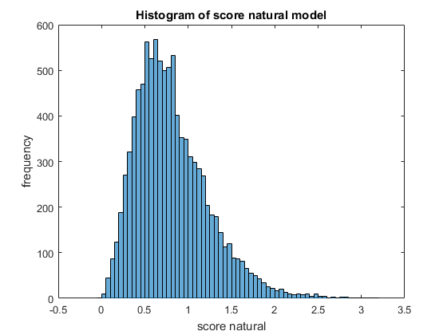
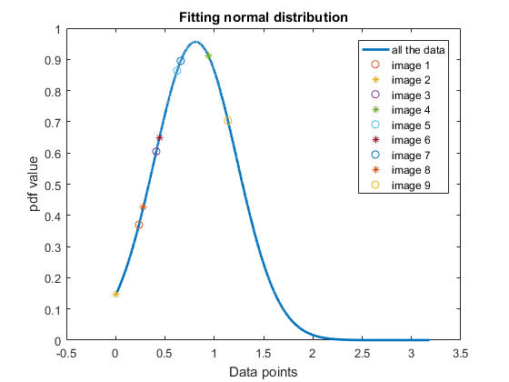
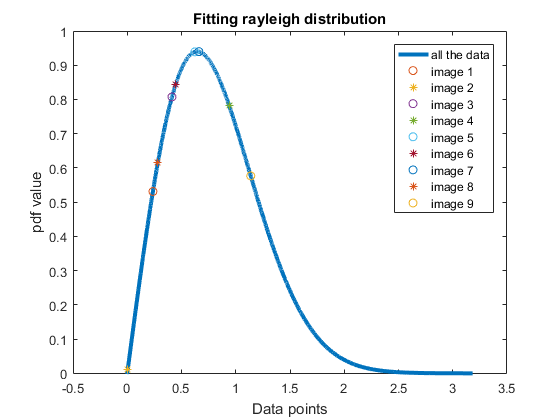
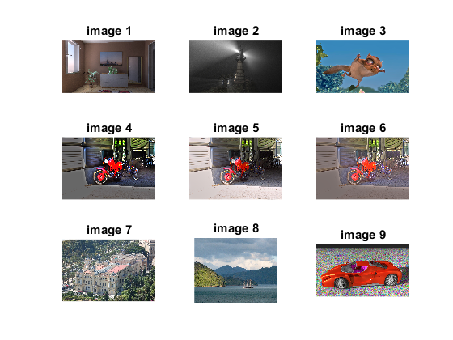

Contents
Lab3 - 201401222 - 201401409
%%Problem 1 % Load data_lab3.mat. ammonia_concentration provides the ammonia % concentration values (in mg/L) from a water treatment plant during a certain period.
Problem 1(a)
Suppose you are asked to assume that this data is normally distributed. How will you confirm/reject this assumption using boxplots, histograms and estimated data statistics (mean, standard deviation etc.). You should explicitly list the features/aspects that you considered in order to arrive at your answer.
Answer 1(a): After plotting boxplot, histogram and calculating mean and standard deviation, we've come to a conclusion that this data is approximately normally distributed. Further details are given below the figures.
close all; clear; load('data_lab3.mat'); dataset=ammonia_concentration; % sorting the data for getting the values of Q1, Q2, Q3. sorted=sort(dataset); len=size(sorted,1); Q1d1=sorted(floor(len*0.25)) Q2d1=sorted(floor(len*0.50)) Q3d1=sorted(floor(len*0.75)) myboxplot1=[min(dataset) Q1d1 Q2d1 Q3d1 max(dataset)]; draw_data=[myboxplot1*20]; draw_data=draw_data'; n = size(draw_data, 2); unit = (1-1/(1+n))/(1+9/(4)) ; figure; hold on; for i = 1:n arr = draw_data(:,i); plot([i-unit, i+unit], [arr(5), arr(5)], 'LineWidth', 2); plot([i-unit, i+unit], [arr(1), arr(1)], 'LineWidth', 2); plot([i-unit, i+unit], [arr(3), arr(3)], 'LineWidth', 2); plot([i, i], [arr(5), arr(4)], 'LineWidth', 2); plot([i, i], [arr(2), arr(1)], 'LineWidth', 2); plot([i-unit, i+unit, i+unit, i-unit, i-unit], [arr(2), arr(2), arr(4), arr(4), arr(2)], 'LineWidth', 2); end diff=max(max(draw_data))- min(min(draw_data)); %For representing the data nicely ylim([min(min(draw_data))-(diff)/10 max(max(draw_data))+diff/10]); ylabel('Values') title('BoxPlot of the ammonia concentration') xlim([0 2.5]) str=strcat('Amm. con. Mean= ',num2str(mean(dataset))); text(1.2,800,str) str=strcat('Amm. con. Sigma= ',num2str(std(dataset))); text(1.2,1000,str)
Q1d1 = 30.2100 Q2d1 = 36.1800 Q3d1 = 42.3600
We can't say much from the boxplot. But if we have access to the boxplot only, we can say that the median is in the middle of the box. The data is not skewed. Maxima and minima are approximately at equal distance with the median. Just from the mean and standard deviation we can say that the standard deviation is small in comparision withe magnitude of the mean. So, the data is densely distributed. Again this can be wrong, depending on the data. The data can be normally distributed. But it is just a simple observation. It can be wrong. We can make more inferences once we plot the histogram of the data.
Histogram code
data=ammonia_concentration; bins=50; histArr=zeros(1,bins); min1=min(min(data)); max1=max(max(data)); diff=(max1-min1)/bins; values=min1+diff/2:diff:max1-diff/2; for i=1:size(data,1) for j=1:bins if(data(i,1)>=min1+(j-1)*diff & data(i,1) < min1+j*diff) histArr(j) =histArr(j) + 1; break; end end end figure; bar(values,histArr); mu=mean(data); sigma=std(data); xlabel('Data points'); ylabel('Frequency of the observers'); str=strcat('Histogram of the ammonia concentration binsize=(',int2str(bins),')'); title(str);
After observing histogram, we can get more insight in the data. The data looks like it is normally distributed.
Problem 1(B)
Notwithstanding your answer in the previous part, assuming that the data is normally distributed, estimate the probability that ammonia concentration is greater than 40 mg/L in two cases: (a) using only the data provided (i.e.not computing any statistics from given data), (b) by using estimated statistics from the data. Does the answer in the two cases agree, yes or no? Provide reason(s) for your choice.
Answer:1(B) (a) : Using the data only we've got 0.34 probability (b) : Using the stastical normal distribution table we've got 0.33 probability. So, we can say that the data is indeed following normal distribution closely. We do not have normal cumulative function in the matlab, so we found the values of the probability using the normal distribution table.
data=ammonia_concentration;
gt_40=sum(data>40);
per_40_using_the_data_only=gt_40/size(data,1)
% referring from the normal distribution table table
(40-mu)/sigma
1-0.67
per_40_using_the_data_only =
0.3444
ans =
0.4584
ans =
0.3300
Problem 2
%Load data_lab3.mat. score_natural_model is a 9968-deimensional vector % in which each element quantifies natural images. The goal of % this experiment is to use this data to model mathematically % the underlying probability distribution, and draw inferences from the resulting model.
Problem 2(a)
Assuming that the data in ‘score_natural_model’ is normally distributed, obtain the corresponding normal distribution curve.
data=score_natural_model; mu2=mean(data) sigma2=std(data) histogram(data); xlabel('score natural'); ylabel('frequency'); title('Histogram of score natural model'); dd=sort(data); min1=min(min(data)) max1=max(max(data)) figure normal_curve=exp(-((dd-mu2).^2)/(2*sigma2*sigma2)) ./(sigma2*((2*pi)^(0.5))); plot(dd,normal_curve,'lineWidth',2) hold on data2=score_test; %dd2=sort(data2) dd2=data2; for i=1: size(dd2,1) if(mod(i,2)==0) x=dd2(i); normal_curve2=exp(-((x-mu2).^2)/(2*sigma2*sigma2)) ./(sigma2*((2*pi)^(0.5))); plot(dd2(i),normal_curve2,'*') hold on; end if(mod(i,2)==1) x=dd2(i); normal_curve2=exp(-((x-mu2).^2)/(2*sigma2*sigma2)) ./(sigma2*((2*pi)^(0.5))); plot(dd2(i),normal_curve2,'o') hold on; end end legend('all the data', 'image 1','image 2','image 3','image 4','image 5','image 6','image 7','image 8','image 9') xlabel('Data points'); ylabel('pdf value'); title('Fitting normal distribution');
mu2 =
0.8115
sigma2 =
0.4172
min1 =
-8.0419e-04
max1 =
3.1837
  Image 4 and Image 9 have higher values. After seeing these images from the plot given below we can observe that these images are very sharp. Gradient is high for these two images. We can even set differeny criteria for commenting about the naturalness of the data.
There is a range between these images are natural and above and below this range the images are sharp or blured. Again the concept of naturalness is relative term.
Problem 2(a)
(contd.) Since the resulting pdf is derived from a set of natural images, it can be used to evaluate the likelihood of how natural a new test image is.
2.1.a
as the pdf value at a point does not give probability, how can we make relative comparisons from the pdf? (hint: think in terms of similarity between pdf and histogram) Answer :
2.1.b
Based on your answer to the previous part, evaluate the resulting pdf at 9 values provided in ‘score_test’. Note that these 9 values correspond to the provided images img1, img2,…img9 respectively. Does the output from the modeled pdf agree with subjective (human) opinion of naturalness of the given 9 test images? Justify your answer.
2.2
Now assume that the given data follows a Rayleigh distribution . In this case, represents the scale parameter which is estimated from the data. For the given problem sigma=0.6451 .
Answer 2.2
data(data<0) % only one values is negative and that too is very small ~ zero. % that's why we are taking absolute values data=abs(data); figure; %rayleigh sigma2=0.6451; rayleigh_curve=(dd./(sigma2*sigma2)).*(exp(-(dd.*dd)./(2*sigma2*sigma2))); plot(dd,rayleigh_curve,'lineWidth',3) hold on data2=score_test; dd2=data2; for i=1: size(dd2,1) if(mod(i,2)==0) x=dd2(i); rayleigh_curve2=(x./(sigma2*sigma2)).*(exp(-(x.*x)./(2*sigma2*sigma2))); plot(dd2(i),rayleigh_curve2,'*') hold on; end if(mod(i,2)==1) x=dd2(i); rayleigh_curve2=(x./(sigma2*sigma2)).*(exp(-(x.*x)./(2*sigma2*sigma2))); plot(dd2(i),rayleigh_curve2,'o') hold on; end end legend('all the data', 'image 1','image 2','image 3','image 4','image 5','image 6','image 7','image 8','image 9') xlabel('Data points'); ylabel('pdf value'); title('Fitting rayleigh distribution');
ans = -8.0419e-04
Image 4 and Image 9 have higher values. After seeing these images from the plot given below we can observe that these images are very sharp. Gradient is high for these two images.
visualizing the images
figure; subplot(3,3,1) imshow('img1.jpg') title('image 1') subplot(3,3,2) imshow('img2.jpg') title('image 2') subplot(3,3,3) imshow('img3.png') title('image 3') subplot(3,3,4) imshow('img4.png') title('image 4') subplot(3,3,5) imshow('img5.png') title('image 5') subplot(3,3,6) imshow('img6.png') title('image 6') subplot(3,3,7) imshow('img7.jpg') title('image 7') subplot(3,3,8) imshow('img8.jpg') title('image 8') subplot(3,3,9) imshow('img9.jpg') title('image 9')
Here we can see all the images and can infer the naturalness of the images.